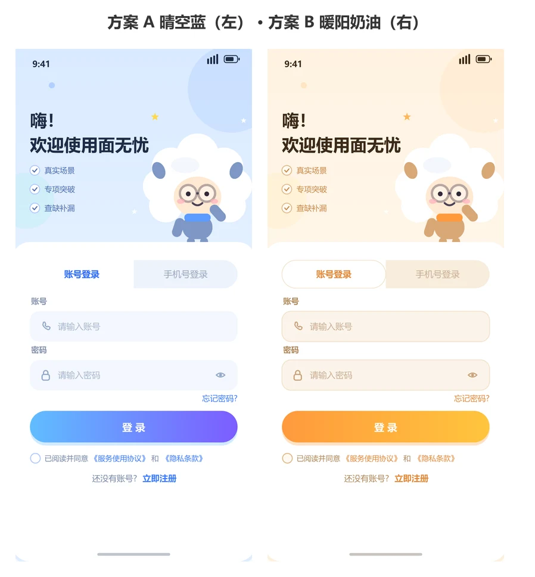

01 / AI 学习应用
KnowMate
面向 AI 学习的应用，包含移动端、后端服务和教师端。上手引导、分类练习与成长报告帮助学习者找到下一步练什么。
查看项目贡献
- 我的职责
- 作为项目经理分派任务、验收成果，参与移动端页面开发、项目整合和答辩准备。
- 案例记录
- 项目资料记录了新手引导、学习画像和团队任务入口的设计与联调。图中为练习页与成长报告的演示画面。
01 / AI 学习应用
面向 AI 学习的应用，包含移动端、后端服务和教师端。上手引导、分类练习与成长报告帮助学习者找到下一步练什么。

02 / AI 求职应用
面向求职准备的移动应用，包含简历分析与润色、练习和社区等模块。配图为登录页设计稿。
我叫罗洋。
我写页面，也负责把团队的成果接起来。
在 KnowMate 和 FaceNoWorry 中，我负责分派任务、验收成果，同时参与页面开发与项目整合。答辩前，我也负责准备材料，梳理如何演示项目及说明技术取舍。